فصل پنجم — الگوهای پرتکرار و قواعد انجمنی#
درس دادهکاوی، کارشناسی ارشد مهندسی کامپیوتر
پرسش محوری: در انبوه تراکنشها، چه اقلامی بیش از حد انتظار با هم ظاهر میشوند، و چگونه میان یک هموقوعی واقعی، یک قاعدهٔ ظاهراً قوی و یک کشف آماریِ قابل دفاع تفاوت بگذاریم؟
فایلهای آموزشی: PDF فصل پنجم · سورس XeLaTeX و شکلها در ZIP · کد Python · Notebook · دادهٔ تراکنش ساختگی. تمام مثالهای محاسباتی با دادهٔ همین بسته قابل تکرارند.
اهداف یادگیری و نقشهٔ استدلال#
پس از این فصل دانشجو باید بتواند: (۱) واحد «تراکنش» و قرارداد حضور/عدمحضور قلم را تعریف کند؛ (۲) پشتیبانی شمارشی و نسبی مجموعهاقلام را با محاسبهٔ دستی به دست آورد؛ (۳) از پشتیبانی و اطمینان به Lift و Leverage برسد و تفاوت معنایی آنها را توضیح دهد؛ (۴) خاصیت ضدتکسوییِ پشتیبانی را اثبات و برای هرس فضای جستوجو استفاده کند؛ (۵) الگوریتم Apriori و محل هزینهٔ آن را مرحلهبهمرحله اجرا کند؛ (۶) فهم شهودی و عملی FP-tree و FP-Growth را با فرمت عمودی TID و Eclat مقایسه کند؛ (۷) الگوی بسته و بیشینه را تشخیص دهد؛ (۸) قواعد همبسته را از قواعد صرفاً پرتکرار جدا کند؛ (۹) نسبت به اندازهٔ نمونه، آزمون چندگانه، متغیر مخدوشگر و پایداری زمانی حساس باشد؛ و (۱۰) گزارش قابل دفاعی از الگوهای کشفشده ارائه دهد.

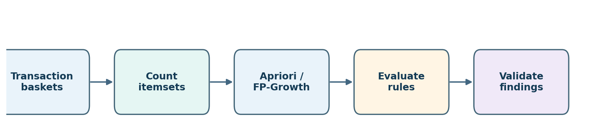
Fig. 59 نقشهٔ فصل: از سبدهای تراکنشی به شمارش، کاوش، ارزیابی و سپس اعتبارسنجی. چهار مرحلهٔ میانی بهتنهایی «کشف قابل استفاده» تولید نمیکنند.#
جایگاه در دو کتاب و ادامهٔ فصل چهارم#
در Han, Pei & Tong، ویرایش چهارم، این مبحث در فصل ۴، بخشهای ۴٫۱ تا ۴٫۳ (صفحات چاپی ۱۴۵ تا ۱۶۹) با عنوان Pattern mining: basic concepts and methods آمده است؛ از Apriori و رشد الگو تا فرمت عمودی و سنجههای جالببودن. در Tan, Steinbach, Karpatne & Kumar، ویرایش دوم، مبنای اصلی فصل ۵، بخشهای ۵٫۱ تا ۵٫۸ (صفحات چاپی ۳۵۷ تا ۴۲۴) با عنوان Association Analysis: Basic Concepts and Algorithms است؛ این کتاب علاوه بر الگوریتم، بر شمارش پشتیبانی، فشردهسازی جواب، ارزیابی قواعد، توزیع کج و پارادوکس سیمپسون تأکید بیشتری دارد. شمارهٔ صفحهها، شمارهٔ چاپی خود کتاب هستند. بحث بوتاسترپ و پروتکل پیشنهادی اعتبارسنجی در این جزوه تکمیل آموزشی مستقل است، نه نقل از یک بخش مشخص کتاب.
در فصل چهارم یاد گرفتیم که دادهٔ پیوسته را میتوان با قرارداد دقیق به اقلام یا ویژگیهای دودویی تبدیل کرد. اکنون یک قدم جلو میرویم: از بازنمایی داده، به کشف ساختارهای تکرارشونده در آن. در عین حال موضوعات چندسطحی، کمیِ پیشرفته، ترتیبی و الگوهای گرافی را برای فصل ششم نگه میداریم. در این فصل همهٔ تراکنشها و نتیجههای عددی ساختگی آموزشی هستند؛ هیچ ادعای واقعی دربارهٔ رفتار خریداران یا اثر علی اقلام مطرح نیست.
۵ـ۱. مسئلهٔ آغازین: اگر مشتری یک کالا بخرد، چه چیز دیگری در سبد او دیده میشود؟#
فرض کنید یک فروشگاه میخواهد جایگذاری اقلام روی قفسه را بازنگری کند. تیم داده بهجای حدسزدن از روی مجموع فروش کالاها، صورتحسابهای خرید را میبیند: در یک خرید واحد، کدام اقلام همزمان حضور دارند؟ این سؤال با «کدام کالا محبوبتر است؟» فرق دارد؛ ممکن است دو کالای بسیار محبوب تقریباً مستقل از هم خریداری شوند، اما دو کالای کمتر محبوب با هموقوعی غیرمعمول همراه باشند.
در این مثال، فقط هشت تراکنش و پنج قلم کالا داریم. نامهای انگلیسی نمادهای قرارداد ثابتاند و دادهها ساختگی هستند:
شناسه |
اقلام حاضر در سبد |
|---|---|
|
|
|
|
|
|
|
|
|
|
|
|
|
|
|
|
اگر فقط به این جدول نگاه کنیم، «نان» و «شیر» به نظر زوج مناسبی میآیند. اما برای قضاوت باید دو مخرج متفاوت را تشخیص دهیم: از چند تراکنش کل فروشگاه؟ و از چند تراکنش حاوی کالای اول؟ کل فصل بر مدیریت دقیق همین مخرجها و تفسیر آنها بنا شده است.

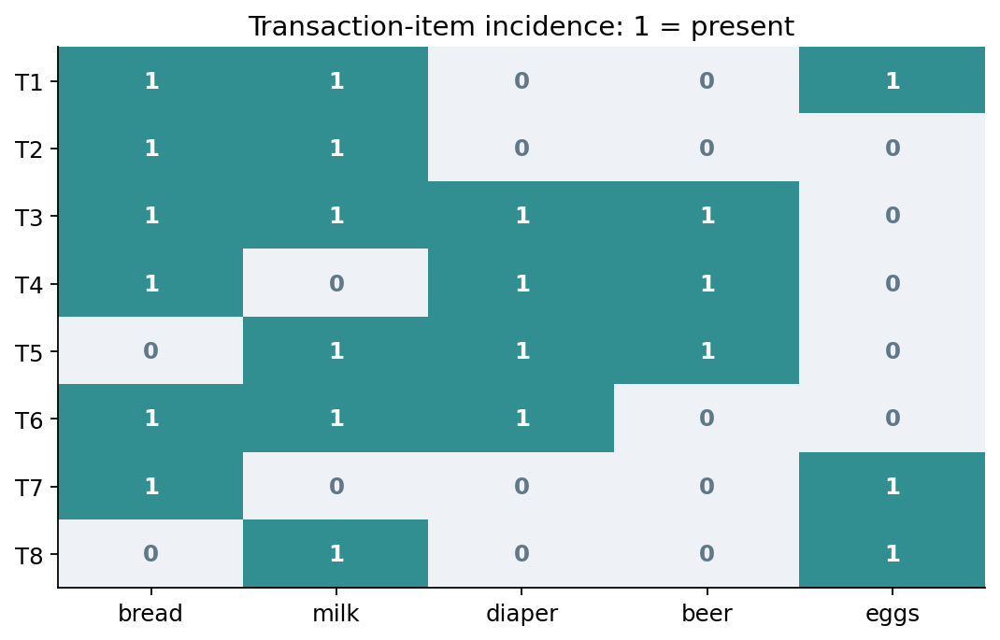
Fig. 60 ماتریس تراکنش–قلم دادهٔ مثال. هر خانهٔ یکرنگ یعنی حضور قلم در همان تراکنش؛ عدد «۱» به تعداد واحد خریداریشده اشاره نمیکند.#
پرسشی برای شروع کلاس#
بدون استفاده از فرمول، پاسخ دهید: آیا حضور همزمان bread و milk دلیل خوبی است که خرید نان را پیشبینیکنندهٔ خرید شیر بدانیم؟ وقتی میدانیم شیر بهتنهایی در شش تراکنش از هشت تراکنش حضور دارد، باید چه چیزی را با چه چیزی مقایسه کنیم؟ پاسخ را در بخش ۵ـ۴ محاسبه میکنیم.
۵ـ۲. مدل دادهٔ تراکنشی: واحد مشاهده را عوض نکنیم#
یک پایگاه تراکنشی مجموعهای از سبدهاست؛ هر سبد یک زیرمجموعه از جهان اقلام است. برای مثال، جهان اقلام را چنین تعریف میکنیم:
در این رابطه، \(I\) مجموعهٔ اقلام، \(D\) مجموعهٔ تراکنشها و \(N\) تعداد تراکنشهاست. هیچ کلمهٔ فارسی داخل فرمول نوشته نشده است تا نمایش MathJax در صفحهٔ راستبهچپ مختل نشود. برای هر مجموعهاقلام \(X\)، تابع نشانگر \(\mathbf{1}[X\subseteq T_i]\) برابر یک است اگر تمام اعضای \(X\) در تراکنش \(i\) حاضر باشند وگرنه صفر.
در عمل، «سفارش»، «سبد»، «رسید»، «جلسهٔ وب» و «خرید هر مشتری در یک روز» واحدهای متفاوتاند. اگر یک مشتری ده بار خرید کرده باشد، در تحلیل تراکنشمحور ده واحد داریم نه یک واحد؛ اگر اقلام چند سفارش را با هم تجمیع کنیم، هموقوعیهای مصنوعی میسازیم. در دادهٔ کد همراه، tid یکتا است؛ اقلام یک سبد بهصورت مجموعه خوانده میشوند و تکرار نام یک قلم داخل یک تراکنش پشتیبانی را افزایش نمیدهد. مقدار خرید، قیمت و ترتیب زمانی عمداً در مدل پایه وارد نشدهاند.
۵ـ۳. پشتیبانی: «چند بار با هم» دقیقاً چه معنایی دارد؟#
پشتیبانی شمارشی مجموعهاقلام \(X\)، تعداد تراکنشهایی است که \(X\) را در خود دارند. پشتیبانی نسبی این تعداد تقسیم بر کل تراکنشهاست:
مثلاً در هشت تراکنش ما، bread در شش تراکنش، milk در شش تراکنش، و زوج آنها در چهار تراکنش دیده میشوند:
زوج diaper و beer در سه تراکنش دیده میشود، پس پشتیبانی آن \(3/8=0.375\) است. این محاسبه فقط یک نرخ مشاهدهشده در همین نمونه است؛ دربارهٔ احتمال خرید در جامعهٔ مشتریان، بدون فرض نمونهگیری و بازهٔ زمانی مناسب نمیتوان حکم قطعی داد.

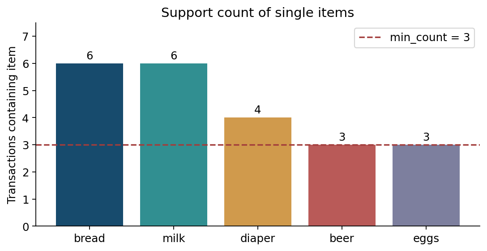
Fig. 61 فراوانی تکقلمها و آستانهٔ نمونهٔ آموزشی (سه تراکنش). آستانه را پیش از دیدن خروجی انتخاب میکنیم، نه بعد از مشاهدهٔ قاعدهٔ دلخواه.#
پشتیبانی حداقلی و تفاوت شمارش با درصد#
اگر حداقل فراوانی شمارشی را \(m=3\) تعیین کنیم، یک مجموعهاقلام «پرتکرار» است هرگاه \(\operatorname{count}(X)\ge m\). در هشت تراکنش این شرط معادل حداقل پشتیبانی نسبی \(3/8\) است. اما در یک میلیون تراکنش، عدد سه همان معنا را ندارد؛ پس آستانه همیشه باید همراه با مخرج و مقیاس داده گزارش شود. مقادیر متعارف و بیمسئلهای برای آستانه وجود ندارد. آستانهٔ بالا الگوهای نادر را حذف میکند؛ آستانهٔ بسیار پایین فضای جستوجو و خطر کشف اتفاقی را بزرگ میکند.
۵ـ۴. قاعدهٔ انجمنی: شرطیبودن با هموقوعی فرق دارد#
یک قاعدهٔ انجمنی را بهصورت \(A\Rightarrow B\) مینویسیم؛ \(A\) پیششرط و \(B\) پیامد قاعدهاند، با \(A\cap B=\varnothing\). این نماد به معنی علتومعلول یا ترتیب زمانی نیست. صرفاً نرخ همراهیِ \(B\) در سبدهای حاوی \(A\) را گزارش میکند.
اطمینان (Confidence) چنین محاسبه میشود:
برای bread به milk داریم \(4/6=0.667\). اما برای milk به bread هم اتفاقاً \(4/6=0.667\) است؛ این برابری تصادفیِ دادهٔ حاضر است، نه تقارن ذاتی Confidence. قاعدهٔ diaper به beer دارای اطمینان \(3/4=0.75\) است، ولی جهت معکوس beer به diaper دارای اطمینان \(3/3=1\) است. همین مثال نشان میدهد جای صورت و مخرج را نمیتوان خودسرانه عوض کرد.
قاعدهٔ ظاهراً قوی که چیزی اضافه نمیکند#
diaper در چهار تراکنش و bread در شش تراکنش حاضر است؛ هر دو در سه تراکنش با هم هستند. پس:
با دانستن وجود پوشک، نرخ نان از ۷۵ درصد پایه تغییری نکرده است! این قاعده ممکن است آستانهٔ اطمینان ۷۰ درصد را رد کند، اما از منظر پیشبینی نان، اطلاعات جدیدی نداده است. همین شکست انگیزهٔ معرفی Lift است.
۵ـ۵. Lift، Leverage و Conviction: «بیش از انتظار» را بسنجیم#
Lift نسبت اطمینان قاعده به پشتیبانی پیامد است. اگر دو رویداد مستقل باشند و مخرجها غیرصفر، Lift برابر یک میشود:
Lift بزرگتر از یک، همراهی مثبت نسبت به مدل استقلال؛ کمتر از یک، همراهی منفی؛ و نزدیک یک، نبود شواهدی برای تفاوت محسوس از استقلال در دادهٔ مشاهدهشده است. این شاخص بهتنهایی آزمون معناداری نیست و رابطهٔ علّی را نشان نمیدهد.
برای beer و diaper، پشتیبانیها بهترتیب \(3/8\) و \(4/8\) هستند، پس:
در برابر، برای diaper به bread، مقدار Lift برابر \((3/8)/[(4/8)(6/8)]=1\) است. از این رو، اطمینان بالا بهتنهایی معیار کافی برای توصیهگر نیست.
Leverage تفاوت مطلق هموقوعی مشاهدهشده با مقدار مورد انتظار تحت استقلال است:
در مثال beer و diaper مقدار آن \(3/8-(3/8)(4/8)=3/16=0.1875\) میشود. Lift نسبت و Leverage اختلاف است: ممکن است نسبت بالا اما اثر مطلق ناچیز باشد، بهویژه اگر رویداد بسیار کمیاب است. Conviction نیز یک سنجهٔ جهتدار بر پایهٔ نرخ نقض قاعده است:
در حالت اطمینان یک و پشتیبانی پیامد کمتر از یک، مقدار نظری Conviction بینهایت است؛ این نشانهٔ قطعیت علمی نیست، بلکه حاصل تقسیم بر صفر در تعریف است. در کد همراه، برای چنین حالتهایی null (مقدار تعریفنشدهٔ عددی) بهجای خروجی JSON نامعتبر قرار داده شده است.

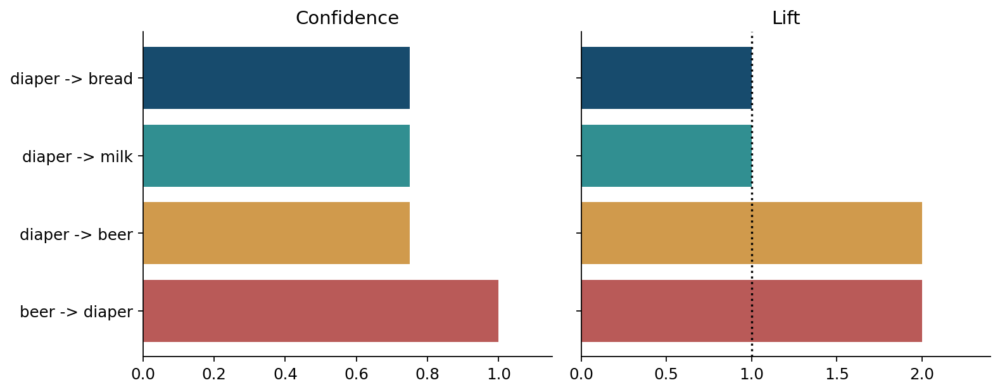
Fig. 62 چهار قاعده با Confidence بالا؛ دو قاعده با وجود اطمینان ۷۵٪ دارای Lift برابر یکاند و اطلاع افزودهای نسبت به پایه نمیدهند.#
ماتریس توافق: چهار خانهٔ مهم#
برای دو قلم beer و diaper، تعداد سبدهای «هر دو»، «فقط اول»، «فقط دوم» و «هیچکدام» برابر \(3,0,1,4\) است. در قالب یک جدول \(2\times2\)، حاشیهها و مخرجها آشکار میشوند. از این جدول میتوان نسبت شانس، ضریب فی و آزمون دقیق فیشر را نیز تعریف کرد؛ اما نتیجهٔ آماری باید با اندازهٔ نمونه و فرضهای آزمون سنجیده شود.

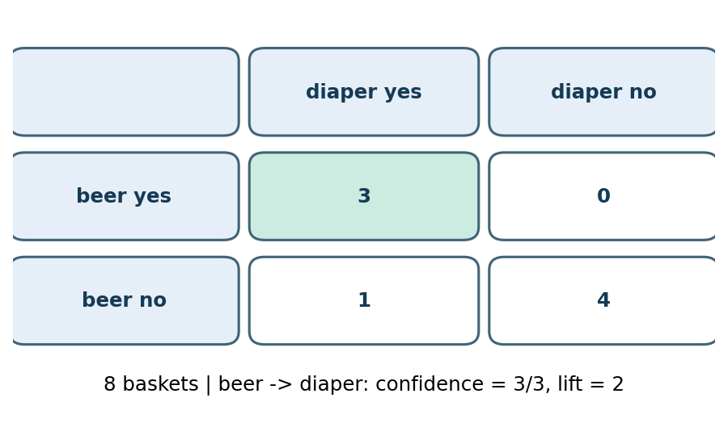
Fig. 63 جدول توافق هشت تراکنش. خانهٔ صفر میتواند با نمونهٔ کوچک بهسادگی رخ دهد؛ بنابراین Confidence یک تضمین قطعی در آینده نیست.#
۵ـ۶. انفجار فضای جستوجو: چرا شمارش همهٔ زیرمجموعهها دشوار است؟#
اگر \(d\) قلم کالا داشته باشیم، تعداد زیرمجموعههای غیرتهی آنها \(2^d-1\) است. برای \(d=5\) فقط \(31\) حالت داریم؛ برای \(d=30\) بیش از یک میلیارد زیرمجموعه ممکن است. حتی پیش از تولید قواعد، الگوریتم باید راهی پیدا کند تا بدون شمارش تمام این حالتها زیرمجموعههای امیدبخش را شناسایی کند.
نکتهٔ اصلی پشتیبانی این است: افزودن قلم به یک مجموعه نمیتواند تعداد تراکنشهای حاوی آن را افزایش دهد. اگر \(X\subseteq Y\)، آنگاه هر تراکنش حاوی \(Y\) لزوماً \(X\) را نیز دارد؛ بنابراین:
این خاصیت ضدتکسویی (Anti-monotonicity) پایهٔ اصل Apriori است: اگر مجموعهای پرتکرار نباشد، هیچ ابرمجموعهٔ آن پرتکرار نیست. وارونِ جمله درست نیست: پرتکراربودن یک تکقلم به معنی پرتکراربودن همهٔ زوجهای شامل آن نیست. در مثال ما، bread و milk هر دو ششبار تکرار شدهاند اما مجموعهٔ سهقلمی bread,milk,diaper فقط دو بار رخ داده است.

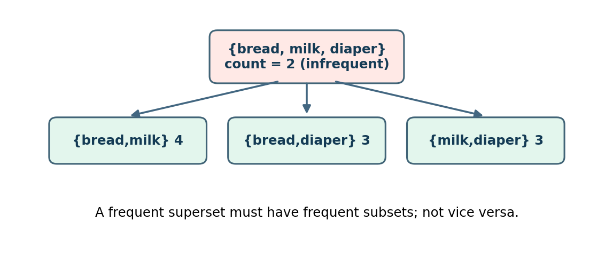
Fig. 64 یک مجموعهٔ سهقلمی میتواند نامتداول باشد، با اینکه تمام زیرمجموعههای دوقلمی آن پرتکرارند. اصل Apriori فقط جهت صحیح استدلال را مجاز میداند.#
۵ـ۷. Apriori: از تکقلم تا هرس مجموعههای بزرگ#
Apriori جستوجو را سطحبهسطح انجام میدهد. در گذر نخست، اقلام تکی را میشمارد. سپس فقط زوجهایی را بهعنوان نامزد میسازد که از اقلام تکیِ پرتکرار تشکیل شدهاند. در مراحل بعد، تنها مجموعههایی ساخته میشوند که همهٔ زیرمجموعههای یکقلمکوچکتر آنها پرتکرار باشند. پس از هر مرحله، یک عبور از داده برای شمارش نامزدها انجام میشود.
شبهکد سادهشده:
L1 = frequent singletons with count >= min_count
k = 2
while L[k-1] is nonempty:
Ck = join compatible itemsets in L[k-1]
Ck = {c in Ck : every (k-1)-subset of c is in L[k-1]}
count c in the transaction database
Lk = {c in Ck : count(c) >= min_count}
k = k + 1
return union(L1, L2, ...)
این الگوریتم صرفاً شمارش ترکیبها نیست؛ دلیل حذف هر نامزد، یک گزارهٔ ریاضی دربارهٔ پشتیبانی است. برای دادهٔ خودمان با آستانهٔ شمارشی سه، همهٔ پنج تکقلم پرتکرارند. از ده زوج ممکن، چهار زوج پرتکرار میمانند: bread+milk با شمارش ۴، و bread+diaper، milk+diaper و diaper+beer هر یک با شمارش ۳. فقط مجموعهٔ سهقلمی bread+milk+diaper از سد هرس زیرمجموعهها عبور میکند؛ ولی شمارش واقعی آن ۲ است، بنابراین هیچ مجموعهٔ سهقلمی پرتکرار نداریم.

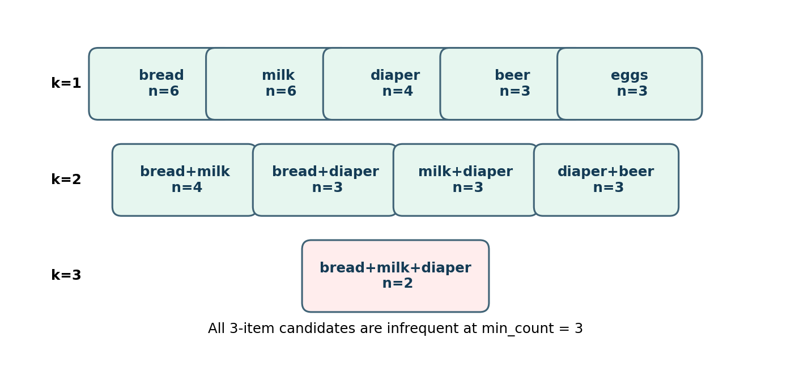
Fig. 65 سطحهای پرتکرار و تنها نامزد سهقلمی قابل شمارش؛ قرمز نشان میدهد پشتیبانی آن کمتر از آستانهٔ انتخابشده است.#

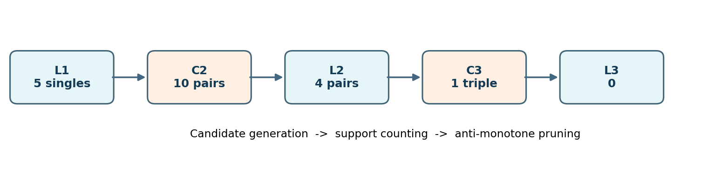
Fig. 66 فراگرد Apriori روی مثال: از ۵ تکقلم تا ۱۰ زوج نامزد، ۴ زوج پرتکرار و در نهایت نامزد سهقلمی ناموفق.#
یک محاسبهٔ دستی با هرس روشن#
چرا مجموعهٔ bread+diaper+beer را حتی نمیشماریم؟ زیرا زیرمجموعهٔ bread+beer فقط دو بار رخ داده است و آستانهٔ ما سه است. بنابراین طبق اصل ضدتکسویی، مجموعهٔ بزرگتر نیز حداکثر دو بار رخ میدهد. حذف آن بدون از دست دادن هیچ جواب پرتکراری ممکن است؛ این با حذف قواعد کماطمینان پس از کاوش فرق دارد.
هزینه و محدودیت#
Apriori ممکن است چند بار بانک تراکنش را اسکن کند و در دادهٔ متراکم نامزدهای بسیار زیاد بسازد. آن را بهخاطر سادگی مفهوم و قابلیت کنترل تدریس میکنیم، نه به این ادعا که برای تمام دادههای بزرگ بهترین انتخاب است. هزینه به تعداد اقلام، طول سبدها، آستانهٔ فراوانی، ساختمان دادهٔ نامزدها و شیوهٔ شمارش وابسته است. در کد آموزشی، سادگی و صحت خروجی در اولویتاند، نه حداکثر کارایی صنعتی.
۵ـ۸. تولید قواعد: پرتکراربودن مجموعه کافی نیست#
پس از یافتن مجموعهٔ پرتکرار \(L\)، برای هر زیرمجموعهٔ غیرتهی \(A\subset L\) میتوان قاعدهٔ \(A\Rightarrow L\setminus A\) را ساخت و اطمینان آن را حساب کرد. قاعده را فقط وقتی نگه میداریم که علاوه بر حداقل پشتیبانی مجموعه، حداقل اطمینان را هم پاس کند. مثلاً برای زوج diaper,beer هر دو جهت را بررسی میکنیم:
در آستانهٔ اطمینان \(0.70\) هر دو پذیرفته میشوند. برای یک مجموعهٔ سهقلمی احتمالی، باید پیامدهای یکقلمی و چندقلمی را جدا بررسی کرد. اصل مهم برای هرس بر پایهٔ اطمینان در هنگام بزرگکردن پیامد آن است که، برای یک \(L\) ثابت، اگر \(A\Rightarrow B\) با \(A=L\setminus B\) کماطمینان باشد، افزایش مجموعهٔ پیامد با کوچکشدن پیششرط نمیتواند اطمینان را افزایش دهد. این خاصیت با ضدتکسویی پشتیبانی یکی نیست و مخرجهای متفاوت دارد.
۵ـ۹. درخت FP و FP-Growth: بهجای نامزدهای بیشمار، پیشوندها را فشرده کنیم#
ایدهٔ FP-Growth این است که تراکنشها را پس از حذف اقلام غیرپرتکرار و مرتبکردن اقلام براساس فراوانی کلی، در درخت پیشوند مشترک (FP-tree) ذخیره کنیم. اگر سبدهای مختلف با اقلام پرتکرار یکسان آغاز شوند، مسیر مشترک بهجای چند بار ذخیرهشدن، با شمارندهٔ گره نمایش داده میشود. سپس برای استخراج الگوهای حاوی یک قلم، پایگاه الگوهای شرطی (conditional pattern base) آن قلم را از مسیرهای پیشوندی استخراج میکنیم؛ این فرایند بهطور بازگشتی روی دادهٔ کوچکتر تکرار میشود.
در مثال حاضر، فراوانیهای bread و milk برابر ۶، diaper برابر ۴ و beer و eggs برابر ۳ است. برای رفع ابهام تساوی، نامهای انگلیسی را بهترتیب لغوی مرتب میکنیم. پس ترتیب جهانی برابر bread, milk, diaper, beer, eggs نیست لزوماً؛ در تساویهای شمارشی ترتیب لغوی نیز تعیینکننده است. کد واقعیِ همراه ترتیب مرتبسازی را دقیقاً از (−frequency, item_name) میسازد. مهم آن است که ترتیب برای همهٔ سبدها ثابت بماند.

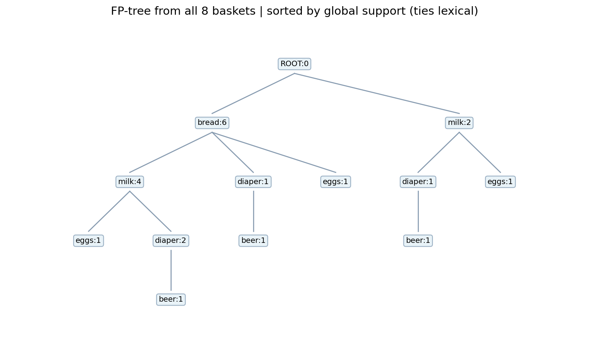
Fig. 67 FP-tree واقعی هشت تراکنش، تولیدشده با همان ترتیب قطعی کد. عدد کنار هر نام، تعداد تراکنشهایی است که از آن گره عبور کردهاند؛ این عدد لزوماً پشتیبانی کل قلم در بانک نیست.#
استخراج شرطی را دستی دنبال کنیم#
برای استخراج الگوهای شامل beer، به گرههای این قلم نگاه میکنیم و مسیرهای پیش از آن را با شمارندههای مربوط جمع میزنیم. در تراکنشهای T3,T4,T5 قلم diaper هم حضور دارد. بنابراین پشتیبانی شرطی diaper همراه با beer برابر ۳ است؛ از همینجا مجموعهٔ پرتکرار diaper,beer با شمارش ۳ استخراج میشود. این نتیجه باید با خروجی Apriori یکسان باشد، زیرا دو روش فضای پاسخ یکسانی را با ساختمان دادهٔ متفاوت جستوجو میکنند.
مرز ادعای کارایی#
FP-Growth از انفجار نامزدهای Apriori میکاهد، اما الزاماً روی همهٔ مجموعهها سریعتر یا کمحافظهتر نیست. فشردهسازی در دادهٔ دارای پیشوندهای مشترک مفید است؛ در دادهٔ بسیار پراکنده یا وقتی تعداد الگوهای واقعی عظیم است، باز هم حافظه، بازگشت و حجم خروجی مسئلهساز میشوند. هیچ الگوریتمی نمیتواند بدون هزینهٔ متناسب با حجم خروجی، میلیاردها الگوی واقعی را چاپ کند.
۵ـ۱۰. نمایش عمودی و Eclat: اشتراک شناسهها بهجای اسکن سبدها#
در نمایش افقی، برای هر تراکنش فهرست اقلام را داریم. در نمایش عمودی، برای هر قلم، مجموعهٔ شناسهٔ تراکنشهای حاوی آن را نگه میداریم؛ آن را \(\operatorname{TID}(X)\) مینامیم. ویژگی کلیدی:
برای مثال، diaper در تراکنشهای T3,T4,T5,T6 و beer در T3,T4,T5 دیده میشود؛ اشتراک آنها سه شناسه دارد. بهجای مرور دوبارهٔ همهٔ سبدها، با تقاطع دو فهرست میتوان شمارش زوج را محاسبه کرد. الگوریتم Eclat با توسعهٔ عمقیِ مجموعهاقلام از همین خاصیت بهره میگیرد. اگر شناسهها را بهصورت آرایهٔ مرتب یا Bitmap ذخیره کنیم، عمل اشتراک میتواند بسیار سریع شود؛ ولی حافظه و الگوی تراکنش تعیینکنندهاند.

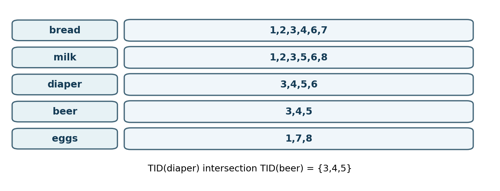
Fig. 68 بازنمایی عمودی هشت تراکنش. اشتراک شناسهها همان شمارش پشتیبانی را برمیگرداند.#
جمعبندی تطبیقی سه الگوریتم#
روش |
ایدهٔ مرکزی |
مزیت آموزشی/عملی |
محدودیت برجسته |
|---|---|---|---|
Apriori |
هرس نامزدها به کمک ضدتکسویی |
فهم و وارسی ساده |
عبورهای مکرر و تعداد نامزد |
FP-Growth |
فشردهسازی پیشوندها و کاوش شرطی |
اجتناب از نامزدسازی صریحِ فراگیر |
پیادهسازی پیچیده و هزینهٔ درخت/خروجی |
Eclat |
اشتراک مجموعهٔ شناسهٔ تراکنشها |
محاسبهٔ مستقیم پشتیبانی با تقاطع |
فشار حافظه برای TIDهای بزرگ |
این جدول نمیگوید کدام روش بهطور مطلق برتر است. در Notebook، هر سه روش برای یک آستانهٔ یکسان به مجموعهاقلام و شمارشهای برابر میرسند؛ برتری سرعتی فقط با Benchmark منصفانه، مقیاس داده و پیادهسازی بهینه قابل دفاع است.
۵ـ۱۱. مجموعهاقلام بسته و بیشینه: خروجی را کوتاه کنیم، نه اینکه معنا را گم کنیم#
پرتکراربودن مجموعهاقلام، خودبهخود به معنی «مفیدبودنِ تمام زیرمجموعهها» نیست. اگر \(1000\) قلم همیشه همراه هم رخ دهند، میلیاردها زیرمجموعهٔ پرتکرار ممکن است تولید شود؛ در حالی که بسیاری از آنها همان اطلاعات هموقوعی را تکرار میکنند. دو مفهوم فشردهساز مهم عبارتاند از مجموعهٔ بسته (Closed) و مجموعهٔ بیشینه (Maximal).
یک مجموعهٔ پرتکرار \(X\) بسته است اگر هیچ ابرمجموعهٔ درست \(Y\supset X\) با شمارش یکسان نداشته باشد. مجموعهٔ پرتکرار بیشینه است اگر هیچ ابرمجموعهٔ پرتکراری نداشته باشد. از تعریفها نتیجه میگیریم:
مثال دستی: در دادهٔ ما beer دقیقاً سه بار رخ میدهد و هر سه بار diaper نیز حاضر است. پس:
بنابراین beer بسته نیست؛ زیرا افزودن diaper شمارش را تغییر نداده است. در مقابل، diaper,beer بسته و بیشینه است، چون هیچ ابرمجموعهٔ پرتکراری ندارد. eggs با شمارش سه نیز در آستانهٔ ما مجموعهای بیشینه است؛ هیچ زوجِ شامل تخممرغ به شمارش سه نمیرسد. تکقلم bread بسته است اما بیشینه نیست، زیرا bread,milk پرتکرار است.
در این مثال، ۹ مجموعهٔ پرتکرار، ۸ مجموعهٔ بسته و ۵ مجموعهٔ بیشینه داریم. کد همراه این سه نوع خروجی را جدا محاسبه میکند.

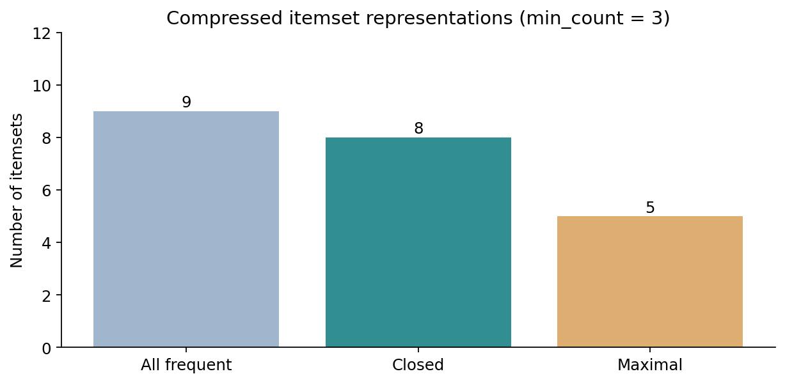
Fig. 69 فشردهسازی مجموعههای پرتکرار به نوع بسته و بیشینه با حداقل شمارش ۳. این سه مجموعه یکسانمعنا نیستند.#
تفاوت اطلاعاتی: مجموعههای بسته، همراه با شمارششان، برای بازسازی شمارش مجموعههای پرتکرار کافیاند؛ مجموعههای بیشینه بهتنهایی چنین امکانی نمیدهند. اگر فقط مجموعهٔ بیشینه را ذخیره کنیم، میدانیم زیرمجموعههای آن پرتکرارند، اما شمارش دقیق تکتک آنها را لزوماً نمیدانیم. این تفاوت در گزارشسازی و ممیزی بعدی حیاتی است.
۵ـ۱۲. خروجی قاعده را چگونه رتبهبندی کنیم؟#
تاکنون حداقل پشتیبانی و اطمینان را بهعنوان فیلتر استفاده کردیم. برای رتبهبندی قواعد، مسئله عوض میشود: آیا قاعده با بیشترین Lift را اول نشان دهیم، یا قاعدهای را که بیشترین تعداد تراکنش را تحت تأثیر قرار میدهد؟ پاسخ به کاربرد بستگی دارد. برای چیدمان کالا، تغییر مطلق نرخ همراهی و تعداد خریدها ممکن است مهمتر از نسبت بسیار بزرگی باشد که روی تنها دو تراکنش دیده شده است.
در کد همراه، هر قاعدهٔ پذیرفتهشده دارای support، confidence، lift و leverage است. بهصورت پیشفرض رتبهبندی به ترتیب Lift و سپس Confidence انجام میشود؛ ولی این ترتیب، فقط قرارداد نمایش مثال است نه حکم اقتصادی. هنگام انتخاب قاعده برای تصمیم، باید هزینهٔ اجرا، سود واقعی، خطای پیشبینی و شواهد خارج از نمونه نیز مشخص شوند.
چرا یک «قانون توصیهٔ خرید» الزاماً تصمیم خوبی نیست؟#
فرض کنید قاعدهٔ beer -> diaper اطمینان یک دارد. پیشنهاد پوشک به هر خریدار نوشیدنی بهمعنی افزایش فروش نیست: شاید فرد از قبل پوشک در سبد داشته باشد، شاید نوشیدنی و پوشک هر دو از یک تبلیغ خاص تأثیر گرفته باشند، یا خرید همزمان در یک فروشگاهِ خاص رخ داده باشد. الگوریتم کشف قاعده، آزمایش مداخلهای انجام نداده است. اگر هدف تصمیمگیری اقتصادی است، باید اثر افزودهٔ توصیه را در آزمایش مناسب سنجید، نه صرفاً Lift تاریخی را.
۵ـ۱۳. آستانهها را از کجا بیاوریم؟ تحلیل حساسیت، نه تنظیم پسینی#
فرض کنید با آستانهٔ شمارشی ۳، نه مجموعهٔ پرتکرار داریم. اگر آستانه را به ۲ کاهش دهیم، بسیاری از زوجهای کمتر دیدهشده و بعضی مجموعههای سهقلمی ظاهر میشوند؛ اگر آن را به ۵ افزایش دهیم، بیشتر زوجها حذف میشوند. این تغییر، «کشف جهان جدید» نیست؛ تغییر یک پارامتر اندازهگیری است.

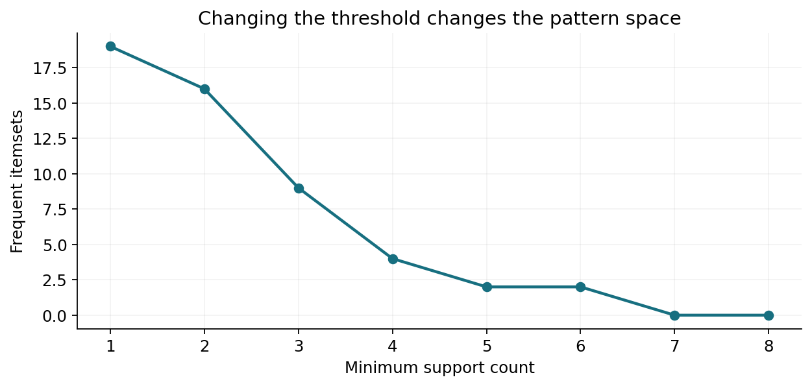
Fig. 70 حساسیت تعداد الگوهای پرتکرار نسبت به حداقل شمارش در همان هشت تراکنش. اگر آستانه را فقط برای حفظ یک نتیجهٔ دلخواه تغییر دهیم، خطر انتخاب پس از مشاهده پیش میآید.#

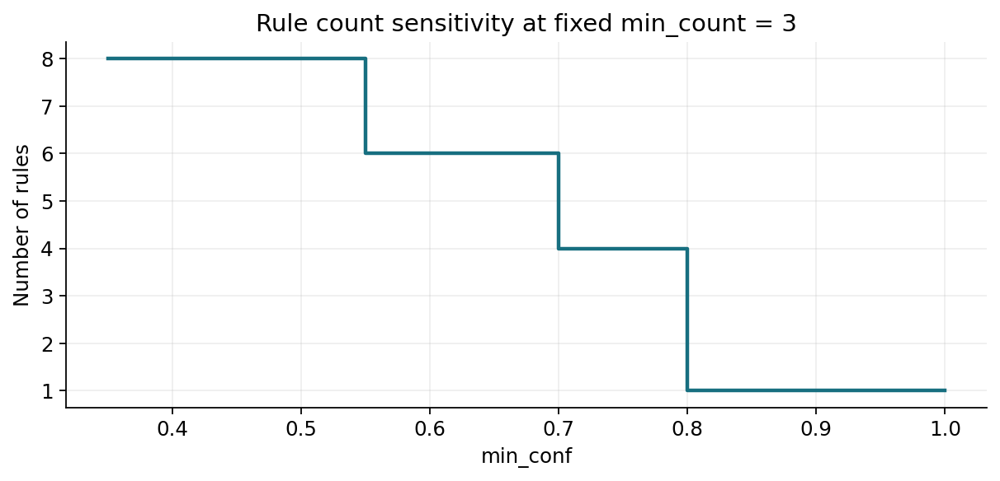
Fig. 71 با ثابتبودن حداقل پشتیبانی، بالا بردن آستانهٔ Confidence تعداد قواعد را کاهش میدهد؛ لزوماً کیفیت تصمیم را افزایش نمیدهد.#
یک پروتکل قابل دفاع عبارت است از: ابتدا حداقل فراوانی موردنیاز برای اعتبار عملی و حجم داده را تعیین کنید؛ سپس تعداد و پایداری الگوها را در چند آستانهٔ نزدیک گزارش کنید. اگر فقط یک بازهٔ باریک، قاعدهٔ مطلوب را تولید میکند، آن را نشانهٔ شکنندگی بدانید. برای دادههای بسیار بزرگ، انتخاب حداقل فراوانی شمارشی و نسبی باید با هم بررسی شود؛ برای رخدادهای نادر، حذف کورکورانهٔ کمفراوانها ممکن است دقیقاً پدیدهٔ مهم را نابود کند.
۵ـ۱۴. دادهٔ بسیار کج و الگوهای نادر: خطر قاعدهٔ «درخشان»#
بسیاری از مجموعهدادهها توزیع کجی دارند: تعداد کمی قلم تقریباً همهجا هستند و تعداد زیادی قلم بهندرت رخ میدهند. معیارهای نسبتی مانند Lift در برخورد با احتمال پایهٔ بسیار کوچک میتوانند مقادیر بزرگی بسازند. اگر \(\operatorname{sup}(B)\) نزدیک صفر باشد، مقدار \(\operatorname{conf}(A\Rightarrow B)/\operatorname{sup}(B)\) ممکن است از نظر عددی بزرگ شود حتی اگر تنها دو مشاهدهٔ مشترک وجود داشته باشد.
برای روشنشدن خطر، فرض کنید از \(10,000\) تراکنش، قلم \(B\) فقط در \(10\) تراکنش باشد و \(A\) در \(20\) تراکنش؛ اگر در دو تراکنش هر دو حضور داشته باشند، Confidence برابر \(2/20=0.1\) و Lift برابر \(0.1/(10/10000)=100\) میشود. Lift صد برابر، روی تنها دو هموقوعی؛ بدون تحلیل عدمقطعیت، چنین عددی برای تصمیم عملی کافی نیست. در مقابل، یک قاعدهٔ Lift برابر \(1.3\) با هزاران مشاهده ممکن است پایدارتر باشد. هیچکدام را تنها با این اعداد رتبهبندی قطعی نمیکنیم.
بحث چندآستانهای (Multiple minimum supports)، الگوهای نادر، منفی و قیود پیشرفته در فصل ششم بهصورت متمرکز دنبال میشود. در اینجا کافی است دانشجو بداند آستانهٔ واحد میتواند یک طبقهٔ کامل از پدیدهها را پنهان کند.
۵ـ۱۵. از درصدهای مشاهدهشده تا عدمقطعیت آماری#
وقتی یک قاعده را از بین هزاران نامزد انتخاب میکنیم، لازم است بین «بهترین عدد در نمونه» و «یافتهٔ قابلتعمیم» تفاوت بگذاریم. حتی اگر اقلام مستقل باشند، بهدلیل نوسان تصادفی ممکن است بعضی زوجها Lift بزرگتر از یک بگیرند. وقتی تعداد آزمایشهای پنهان زیاد است، انتخاب بیشینهٔ Lift سوگیری رو به بالا ایجاد میکند.
جدول توافق و آزمون دقیق فیشر#
برای دو متغیر دودویی، میتوان جدول توافقی با چهار شمارش \(n_{11},n_{10},n_{01},n_{00}\) ساخت و فرض استقلال را بررسی کرد. در نمونهٔ هشتتایی ما، جدول beer و diaper برابر \((3,0,1,4)\) است. اگر حاشیههای جدول را ثابت فرض کنیم، احتمال یکطرفهٔ مشاهدهٔ اشتراکِ دستکم سه تحت مدل صفر از توزیع فوقهندسی به دست میآید:
بنابراین در آزمون یکطرفه با سطح \(0.05\)، این دادهٔ کوچک بهتنهایی شاهد کافی برای رد استقلال نیست؛ با اینکه Lift برابر ۲ و Confidence قاعدهٔ معکوس برابر یک بود. این محاسبه فقط برای جدول آموزشی با حاشیههای ثابت معتبر است و آزمایش با پیشثبتنام فرض را شبیهسازی نمیکند؛ اگر پس از جستوجوی فراگیر همین زوج را انتخاب کرده باشیم، باید گزینش پس از مشاهده و آزمونهای چندگانه را نیز در نظر بگیریم.
آزمونهای متعدد و جداسازی داده#
اگر بهجای یک زوج، هزاران رابطه را میسنجیم، نرخ هشدار کاذب کلی ممکن است بسیار بالا برود. تصحیحهایی مانند Bonferroni یا کنترل نرخ کشف نادرست (FDR) در صورت برقرار بودن مفروضات، مسیرهای شناختهشدهاند، اما این فصل آنها را جایگزین طراحی مطالعه یا ارزیابی مستقل نمیداند. یک راهکار عملی این است که قواعد را در دورهٔ اکتشاف پیدا کنیم و فقط قواعد ازپیشمنتخب را در دورهٔ زمانی دیگر ارزیابی کنیم؛ اگر در همهٔ دادهها کاوش و همان دادهها را معیار قطعی قاعده قرار دهیم، نتیجه خوشبینانه میشود.
۵ـ۱۶. بوتاسترپ آموزشی: چرا Lift نمونهٔ کوچک ناپایدار است؟#
در بوتاسترپ (Bootstrap)، بارها هشت تراکنش را با جایگذاری از همان هشت تراکنش نمونهگیری میکنیم و Lift را دوباره حساب میکنیم. هدف، دیدن حساسیت برآورد به تغییر ترکیب دادههاست؛ این روش جادویی نیست و اگر خود نمونه غیرنماینده باشد، آن را اصلاح نمیکند. در برخی بازنمونهها ممکن است مخرج صفر شود؛ باید چنین مواردی را آشکارا کنار گذاشت یا طبق قرارداد آماری جدا بررسی کرد.

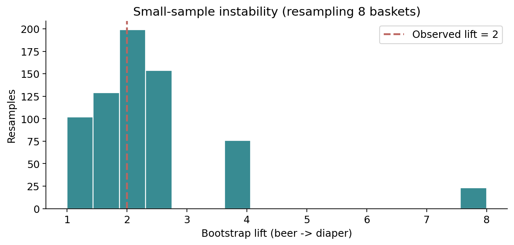
Fig. 72 توزیع بوتاسترپ Lift قاعدهٔ beer -> diaper با ۷۰۰ بازنمونهگیری از هشت سبد. پراکندگی مقادیر نشان میدهد نقطهٔ برآوردِ ۲ بهتنهایی توصیف کاملی نیست.#
برای دادههای زمانی، بازنمونهگیری مستقلِ تراکنشها ممکن است ساختار زمان را بشکند؛ در چنین وضعیتی ارزیابی روی بازههای زمانی جداگانه یا بلوکبندی مناسب ضروری است. ادعای «قاعدهٔ پایدار» زمانی قابل دفاع است که هم تعریف تراکنش و هم توزیع جمعیتِ هدف در دورهٔ ارزیابی روشن باشد.
۵ـ۱۷. پارادوکس سیمپسون: میانگین دو گروه میتواند علامت رابطه را وارونه کند#
چرا نباید مشتریان تمام شعبهها را بدون بررسی تفاوتهای پایه در یک ظرف بریزیم؟ مثال کاملاً ساختگی زیر را ببینید. در دو گروه «نرخ پایهٔ بالا» و «نرخ پایهٔ پایین»، رویداد \(B\) برای دارندگان قلم \(A\) کمتر از افراد بدون \(A\) دیده میشود؛ ولی در دادهٔ تجمیعشده، نرخ ظاهراً برای دارندگان \(A\) بیشتر میشود:
گروه |
\(P(B\mid A)\) |
\(P(B\mid \neg A)\) |
تعداد افراد دارای \(A\) / بدون \(A\) |
|---|---|---|---|
نرخ پایهٔ بالا |
\(72/80=0.90\) |
\(19/20=0.95\) |
\(80/20\) |
نرخ پایهٔ پایین |
\(2/20=0.10\) |
\(16/80=0.20\) |
\(20/80\) |
همهٔ افراد |
\(74/100=0.74\) |
\(35/100=0.35\) |
\(100/100\) |
در هر دو گروه، حضور \(A\) با نرخ کمتر \(B\) همراه بوده است؛ ولی چون \(A\) بیشتر در گروه نرخ پایهٔ بالا مشاهده میشود، تجمیع دو گروه جهت رابطه را معکوس نشان میدهد. این نمونه برای آموزش ساخته شده و اثبات علیت یا وضعیت یک فروشگاه واقعی نیست.

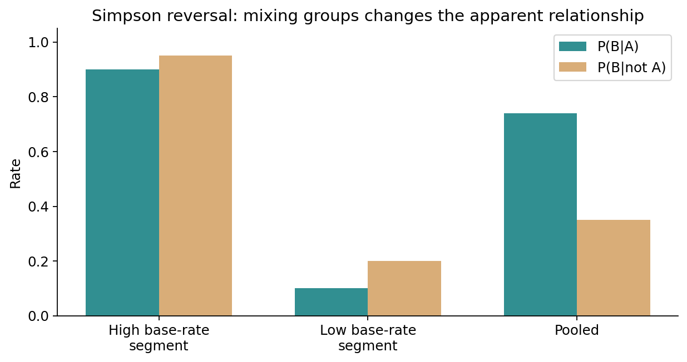
Fig. 73 نمونهٔ عددی پارادوکس سیمپسون. تفاوت ترکیب گروهها باعث وارونگی نرخ شرطی در دادهٔ ادغامشده میشود.#
راهکار آموزشی: اگر فروشگاه، منطقه، تبلیغ، فصل یا گروه مشتری میتوانند با هر دو قلم مرتبط باشند، علاوه بر گزارش تجمیعی، قواعد را در لایههای مناسب نیز محاسبه کنید. برای نتیجهگیری علّی همچنان به طراحی مطالعه یا آزمایش نیاز داریم؛ صرف لایهبندی به معنی حذف تمام مخدوشگریها نیست.
۵ـ۱۸. وقتی رابطه معنا ندارد: هشدارهای تفسیر و حریم خصوصی#
قاعدهٔ هموقوعی در سطح یک تراکنش، یک جملهٔ توصیفی دربارهٔ داده است. آن را با «شخصی که A خریده حتماً B میخرد»، «A باعث خرید B میشود» یا «رفتار همهٔ جوامع چنین است» یکی نگیرید. همچنین فهرست اقلامی که به بیماری، باور یا موضوع حساس مربوط میشوند میتوانند دربارهٔ مشتریان اطلاعاتی آشکار کنند؛ استفاده از آنها در دادهکاوی نیازمند مبنای قانونی و محدودیت دسترسی و هدف است.
مشکلات دادهٔ واقعی که خروجی قواعد را تغییر میدهند: برگشت کالا، سفارش ابطالشده، تخفیفهای محدود، اقلامِ همراه بستههای تبلیغاتی، دادهٔ Missing بهجای صفر، چند خرید متعلق به یک مشتری، تغییر نام محصول، کالاهای خارج از موجودی و ادغام دادهٔ چند فروشگاه. دانشجو باید در گزارش خود تعریف یک تراکنش، بازهٔ زمانی، شیوهٔ برخورد با اقلام گمشده و دامنهٔ تحلیل را دقیق ذکر کند؛ این تصمیمها بخشی از مدلاند، نه مرحلهٔ نظافتِ بیاثر.
۵ـ۱۹. آزمایشگاه عملی یکپارچه: همجوابی سه روش، نه مسابقهٔ تبلیغاتی#
Notebook این فصل از همان CSV هشتتراکنشی استفاده میکند و مسیر زیر را بدون اینترنت طی میکند: خواندن داده؛ ساخت جدول پشتیبانی؛ اجرای Apriori، Eclat و FP-Growth؛ مقایسهٔ مجموعههای نتیجه و شمارشها؛ تولید قواعد با Confidence حداقلی \(0.70\)؛ رتبهبندی برحسب Lift؛ محاسبهٔ دستی شاخصهای چند قاعده؛ و در پایان مقایسهٔ خروجیهای بسته و بیشینه.
برای شروع مستقل، در پوشهٔ downloads اجرا کنید:
python chapter05_examples.py --min-count 3 --min-conf 0.70
python -m unittest -v test_chapter05_examples.py
کد استاندارد پایتون است و برای محاسبات اصلی به mlxtend یا یک سرویس آنلاین وابسته نیست. سه پیادهسازی از نظر روش جستوجو مستقلاند؛ آزمونها علاوه بر دادهٔ اصلی، روی نمونههای تصادفی کوچک نیز برابری نتیجه را بررسی میکنند. اگر قصد محکزدن زمان اجرا دارید، همین کد آموزشی را مستقیماً با پیادهسازی صنعتی مقایسه نکنید: بهینهسازی، ساختمان داده، بار ورودی و هزینهٔ ساخت خروجی باید یکسان و گزارش شوند.

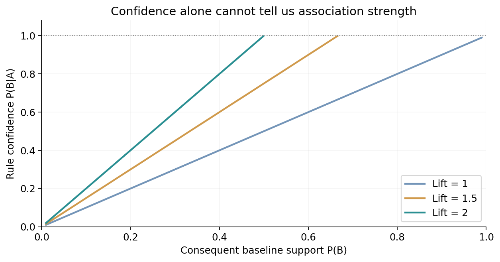
Fig. 74 Confidence را باید همراه با پشتیبانی پایهٔ پیامد تفسیر کرد. برای Lift ثابت، اطمینان موردنیاز با فراوانی پایهٔ پیامد تغییر میکند؛ اگر حاصلضرب Lift و پشتیبانی پایه از یک فراتر رود، آن ترکیب ناممکن است.#
۵ـ۲۰. پرسشهای ممیزی خروجی: یک چکلیست علمی کوتاه#
پیش از معرفی یک قاعده به استاد یا تیم تصمیمگیرنده، باید بتوان پاسخ داد: واحد تراکنش چیست؟ آیا آستانهها پیش از مشاهدهٔ نتایج یا با دلیل مشخص انتخاب شدهاند؟ برای قاعده چند مشاهدهٔ مشترک داریم؟ نرخ پایهٔ پیامد چقدر است؟ آیا Lift و اختلاف مطلق هر دو گزارش شدهاند؟ آیا مشتری، شعبه، فصل یا طرح تبلیغاتی میتوانند توضیح جایگزین باشند؟ آیا قاعده در بازهٔ مستقل زمانی حفظ میشود؟ چه میزان آزمون نامزد انجام شده و آیا اثر انتخاب بهترین مشاهده کنترل شده است؟ چه اقدام تصمیمی از قاعده برمیآید و چگونه اثر آن را جداگانه میسنجیم؟
شکست در پاسخ به هر یک از این پرسشها بهمعنی «غلطبودن فرمول» نیست؛ به معنی آن است که تفسیر نتیجه هنوز کامل نیست. این تمایز، قلب روش تحقیق در دادهکاوی است. اگر قاعده صرفاً برای نمایش نمونهٔ آموزشی تولید شده، همان را شفاف بنویسید.
۵ـ۲۱. تمرینهای پایانی#
تمرینها عمداً از خواندن و محاسبهٔ دستی آغاز میشوند و به طراحی آزمایش، کدنویسی و نقد نتیجه میرسند. برای همهٔ مسائل، فرض کنید دادهٔ هشتسبدی همان جدول ابتدای فصل است، مگر خلافش نوشته شده باشد.
تعریف تراکنش: فرض کنید یک مشتری در دو روز خرید کرده است. توضیح دهید چرا ادغام دو خرید میتواند پشتیبانی مجموعهاقلام را افزایش یا کاهش دهد؛ دو مثال کوچک بسازید.
جدول پشتیبانی: تعداد و پشتیبانی نسبی تکقلمها و تمام ده زوج ممکن را دستی محاسبه کنید. نتایج را با خروجی Python تطبیق دهید.
جهت قاعده: Confidence دو جهت
bread <-> milkو دو جهتbeer <-> diaperرا محاسبه کنید؛ توضیح دهید چرا مقدار یک معیار در جهت معکوس الزاماً ثابت نمیماند.Lift و خطای اطمینان: برای قواعد
diaper -> breadوdiaper -> beerهر سه مقدار Support، Confidence و Lift را محاسبه و کاربرد فرضی آنها را نقد کنید.Leverage: مقدار Leverage دو زوج مسئلهٔ قبل را حساب کنید. آیا نتیجه با رتبهبندی Lift یکسان است؟
اصل Apriori: اثبات کنید اگر یک مجموعه شمارش کمتر از حداقل پشتیبانی دارد، ابرمجموعهٔ آن نیز نمیتواند پرتکرار باشد؛ جهت عکس را با مثال نقض نشان دهید.
گذرهای Apriori: نامزدهای \(C_2\)، خروجی \(L_2\)، نامزدهای \(C_3\) و خروجی \(L_3\) را با \(m=3\) به دست آورید و در هر گام دلیل هرس را بنویسید.
تغییر آستانه: برای \(m=2\) تمام مجموعههای پرتکرار را پیدا کنید و تعداد آنها را با \(m=3\) مقایسه کنید. آیا یافتن الگوهای بیشتر به معنی بهترشدن مدل است؟
قاعده با پیامد چندقلمی: برای یک مجموعهٔ سهقلمی با \(m=2\)، تمام قواعد غیرتهی و مجاز آن را بسازید و Confidence هرکدام را حساب کنید.
شمارش عمودی: مجموعههای شناسه برای
breadوdiaperرا استخراج و با تقاطع، شمارش زوجشان را پیدا کنید.درخت FP: ترتیب ثابت اقلام را تعیین کنید؛ دو تراکنش اول را بهصورت دستی در درخت وارد کنید و تغییر شمارندهٔ هر گره را توضیح دهید.
شرطیسازی FP: پایگاه الگوهای شرطی
beerرا بنویسید و نشان دهید چگونه الگویbeer,diaperبا شمارش سه به دست میآید.الگوی بسته: توضیح دهید چرا
beerدر \(m=3\) بسته نیست. یک الگوی بسته ولی نه بیشینه و یک الگوی بیشینه پیدا کنید.کاهش خروجی: نسبت تعداد الگوهای بسته به تمام الگوهای پرتکرار را در دادهٔ مثال محاسبه کنید؛ چرا مجموعههای بیشینه برای بازسازی دقیق شمارش کافی نیستند؟
مثال نقض Lift: یک مجموعهدادهٔ ساختگی ۱۰۰۰تراکنشی طراحی کنید که Lift دو قلم بزرگتر از ۵ باشد اما فقط یک یا دو بار با هم دیده شده باشند.
آزمون دقیق: با حاشیههای جدول نمونهٔ
beer/diaper، احتمال اشتراک سه مورد را با ترکیبهای شمارشی به دست آورید. آیا با آستانهٔ ۰٫۰۵ نتیجهٔ شما با مشاهدهٔ Lift=2 متناقض است؟انتخاب پس از مشاهده: اگر ۲۰۰۰ زوج را بررسی کنید و بهترین Lift را گزارش کنید، چرا نمیتوان همان شواهد را مثل یک فرضیهٔ ازپیشتعیینشده تفسیر کرد؟
پارادوکس سیمپسون: تمام فراوانیهای جدول بخش ۵ـ۱۷ را به شکل چهارخانهای بازسازی کنید. با وزن یکسان برای دو گروه، چه چیزی دربارهٔ نرخها تغییر میکند؟
پایداری: در Notebook، داده را با بذرهای مختلف بازنمونهگیری کنید و توزیع Lift و تعداد موارد دارای مخرج صفر را گزارش دهید. چرا یک بازهٔ زمانی مستقل ممکن است آزمون مناسبتری باشد؟
کار مهندسی کد: در CSV یک شناسهٔ تراکنش تکراری اضافه کنید. آزمون ورودی را اجرا و توضیح دهید چرا توقف محاسبه از پذیرش بیسروصدای دادهٔ غلط بهتر است.
مقایسهٔ الگوریتمها: دادهٔ ساختگی دیگری با ۲۰ تراکنش و شش قلم بسازید. برای حداقل شمارشهای ۱ تا ۵، برابری نتیجهٔ Apriori، Eclat و FP-Growth را اثبات عملی کنید.
گزارش تصمیم: یک قاعده را انتخاب کنید و گزارشی نیمصفحهای با تعریف جامعهٔ هدف، شمارش، Support، Confidence، Lift، نرخ پایه، توضیح جایگزین و طرح اعتبارسنجی بنویسید.
دادهٔ کج: دو قلم با فراوانیهای بسیار متفاوت فرض کنید. نشان دهید چرا یک حداقل پشتیبانی مشترک ممکن است الگوی مربوط به قلم نادر را حذف کند و چه جایگزینهایی باید بررسی شوند.
پرسش پژوهشی: تفاوت «کشف هموقوعی»، «پیشبینی پاسخ»، «آزمون وابستگی» و «اثبات اثر علی» را با یک مثال سفارش آنلاین توضیح دهید. کدام یک را Apriori بهتنهایی حل میکند؟
۵ـ۲۲. جمعبندیِ استدلال فصل#
مسیر این فصل از یک سؤال ساده شروع شد: «کدام اقلام در یک سبد همراه هم دیده میشوند؟» ابتدا دیدیم شمارش هموقوعی، بدون تعیین مخرج، معنی کافی ندارد. پس Support را تعریف کردیم؛ سپس Confidence را بهصورت احتمال شرطی تجربی و Lift را بهعنوان مقایسه با نرخ پایه به دست آوردیم. با اصل ضدتکسویی، فضای نمایی مجموعهاقلام را بدون حذف پاسخهای پرتکرار هرس کردیم. Apriori این اصل را صریح اجرا میکند؛ FP-Growth پیشوندها را فشرده میسازد؛ Eclat با اشتراک TIDها شمارش را انجام میدهد. الگوهای بسته و بیشینه، نمایش جواب را فشرده میکنند، اما سطح اطلاعات حفظشدهٔ یکسانی ندارند.
در پایان آموختیم که یک قاعدهٔ قوی از نظر Support یا Confidence هنوز یک یافتهٔ تأییدشده نیست. نقش نرخ پایه، اندازهٔ نمونه، آزمونهای متعدد، پارادوکس سیمپسون و اعتبارسنجی مستقل باید روشن باشد. پرسش اساسی این است که آیا قاعده پس از انتقال از نمونهٔ کوچک به جمعیتِ هدف، همچنان مفید خواهد بود.
پیوند با فصل ششم#
پس از تسلط بر الگوی پرتکرار و قاعدهٔ انجمنی در دادهٔ تراکنشی ساده، آمادهایم الگوهای چندسطحی، کمی، چندبعدی، نادر، ترتیبی و ساختاری را با قیود پیچیدهتر بررسی کنیم. آنجا دیگر صرفاً «حضور همزمان اقلام» کافی نیست؛ ترتیب، نوع، مفهوم و وابستگی ساختاری وارد تعریف الگو میشوند.
منابع و مسیر مطالعه#
Han, Jiawei; Pei, Jian; Tong, Hanghang. Data Mining: Concepts and Techniques, 4th ed., فصل ۴، بخشهای ۴٫۱–۴٫۳، صفحات ۱۴۵–۱۶۹. موضوعات پایه، Apriori، رشد الگو، فرمت عمودی، مجموعهاقلام بسته/بیشینه و ارزیابی الگو.
Tan, Pang-Ning; Steinbach, Michael; Karpatne, Anuj; Kumar, Vipin. Introduction to Data Mining, 2nd ed., فصل ۵، بخشهای ۵٫۱–۵٫۸، صفحات ۳۵۷–۴۲۴. مفاهیم، اصل Apriori، شمارش و هرس نامزد، FP-Growth، فشردهسازی جواب، سنجهها، پارادوکس سیمپسون و توزیع کج.
یادداشت اصالت: تمام جدول دادهٔ اصلی، مثالهای محاسباتی، متن توضیحی، نمودارها و کدها برای همین جزوه طراحی شدهاند. شکلها بازطراحی تصویر کتابها نیستند. محاسبات استنباطی و بوتاسترپ بهعنوان بسط آموزشی آمدهاند؛ اعتبار آنها وابسته به فرضهای تعریفشده در همان بخش است.